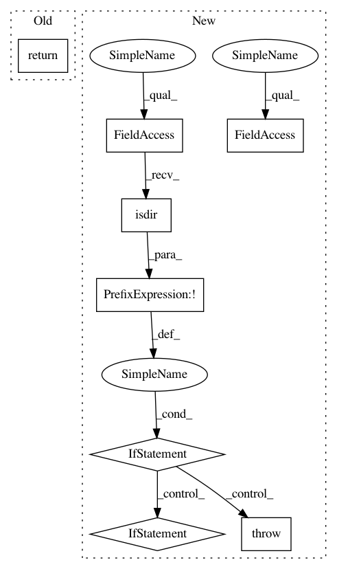

39d47fa6351c7a39a2af3904819d3edcc394aff3,mlflow/store/artifact/artifact_repo.py,ArtifactRepository,download_artifacts,#ArtifactRepository#Any#Any#,60
Before Change
" Destination path: {dst_path}".format(dst_path=dst_path)),
error_code=INVALID_PARAMETER_VALUE)
return download_artifacts_into(artifact_path, dst_path)
@abstractmethod
def _download_file(self, remote_file_path, local_path):
After Change
else:
download_file(file_info.path)
return local_dir
if not os.path.exists(dst_path):
raise MlflowException(
message=(
"The destination path for downloaded artifacts does not"
" exist! Destination path: {dst_path}".format(dst_path=dst_path)),
error_code=RESOURCE_DOES_NOT_EXIST)
elif not os.path.isdir(dst_path):
raise MlflowException(
message=(
"The destination path for downloaded artifacts must be a directory!"
" Destination path: {dst_path}".format(dst_path=dst_path)),
error_code=INVALID_PARAMETER_VALUE)
// Check if the artifacts points to a directory
if self._is_directory(artifact_path):
return download_artifact_dir(artifact_path)
else:
return download_file(artifact_path)
@abstractmethod
def _download_file(self, remote_file_path, local_path):
Download the file at the specified relative remote path and saves
In pattern: SUPERPATTERN
Frequency: 3
Non-data size: 8
Instances
Project Name: mlflow/mlflow
Commit Name: 39d47fa6351c7a39a2af3904819d3edcc394aff3
Time: 2019-12-18
Author: 33237569+tomasatdatabricks@users.noreply.github.com
File Name: mlflow/store/artifact/artifact_repo.py
Class Name: ArtifactRepository
Method Name: download_artifacts
Project Name: inspirehep/magpie
Commit Name: d000d0750c958e2ec1b3d9eb3c9ea9cf63ab14f0
Time: 2017-07-07
Author: stypka@spotify.com
File Name: magpie/main.py
Class Name: MagpieModel
Method Name: batch_train
Project Name: inspirehep/magpie
Commit Name: d000d0750c958e2ec1b3d9eb3c9ea9cf63ab14f0
Time: 2017-07-07
Author: stypka@spotify.com
File Name: magpie/main.py
Class Name: MagpieModel
Method Name: train